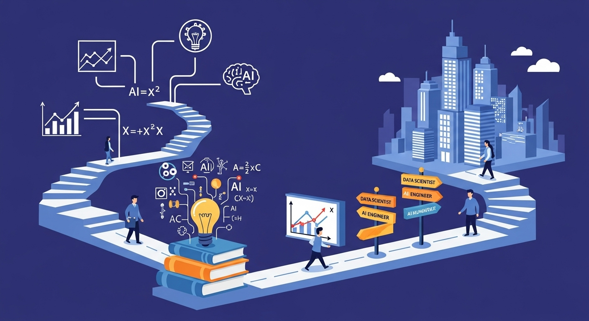
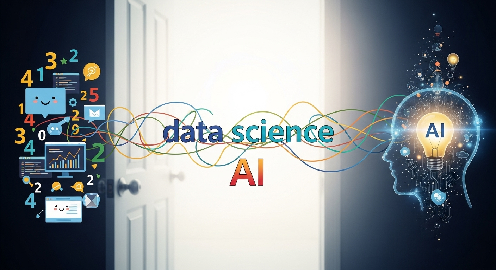
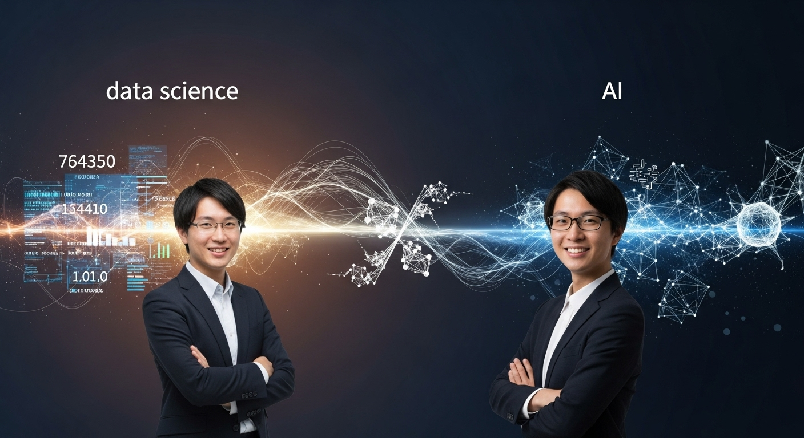
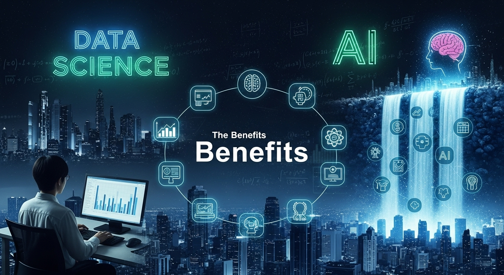
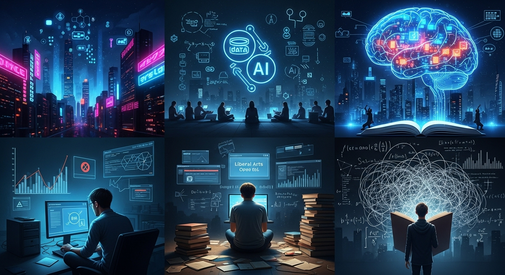
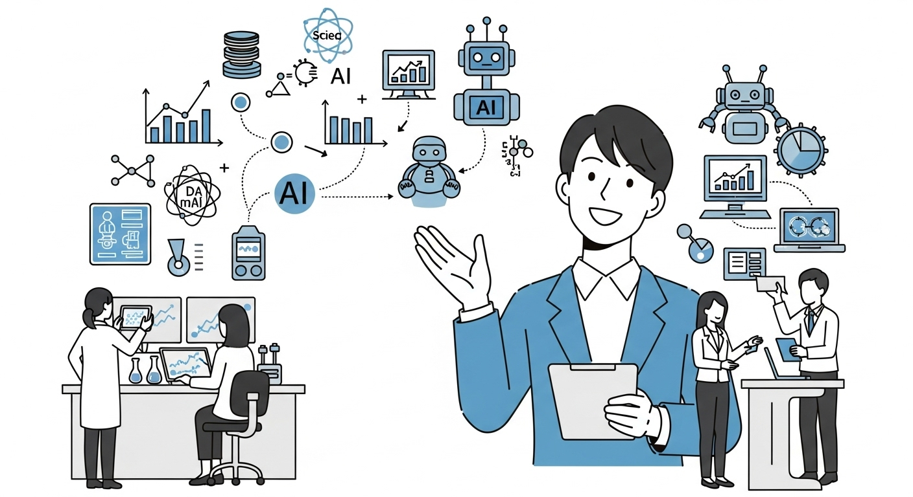
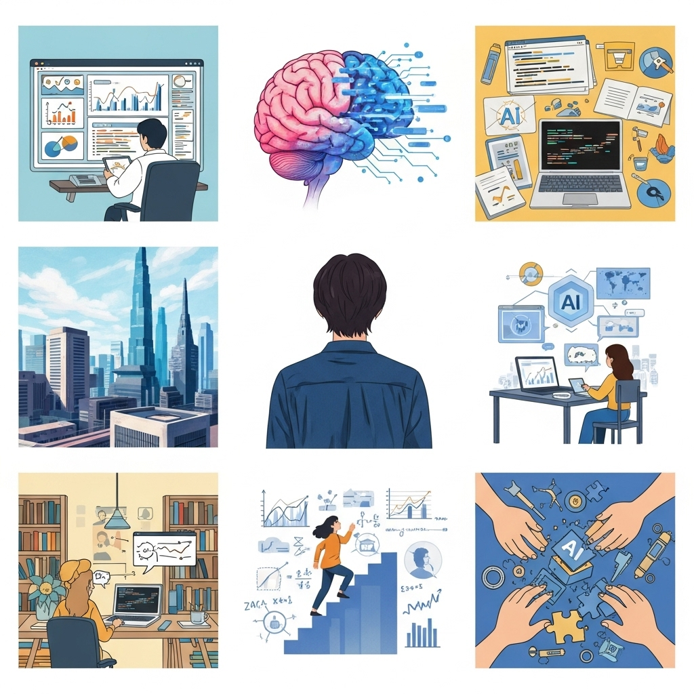
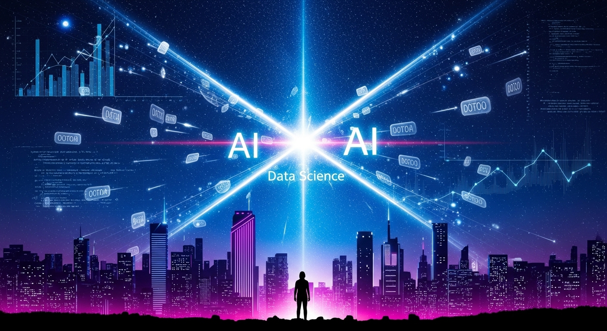

未経験・文系でもわかる！データサイエンスとAIの関係性＆キャリアパス


「データサイエンス」「AI（人工知能）」といった言葉を、ニュースやビジネスシーンで耳にしない日はないほど、私たちの社会に深く浸透してきています。スマートフォンを手に取れば、AIがあなたにおすすめの動画を提案してくれますし、オンラインショッピングでは、データサイエンスに基づいた商品が「あなたへのおすすめ」として表示されます。
これらは、もはや未来の技術ではなく、私たちの生活や仕事を豊かにする「現在の技術」です。そして、この変化の波は、多くの企業で「データとAIを使いこなせる人材」への渇望を生み出しています。
しかし、多くの方がこう感じているのではないでしょうか。
「なんだか難しそう…」
「理系やエンジニアのための世界で、文系の自分には関係ないのでは？」
「そもそも、データサイエンスとAIって何が違うの？」
もしあなたが少しでもこのように感じているのなら、この記事はまさにあなたのために書かれました。この記事では、専門的な知識がまったくない方、特に文系出身でキャリアに悩んでいる方に向けて、データサイエンスとAIの世界を、どこよりも優しく、そして深く解き明かしていきます。
この記事を読み終える頃には、あなたは以下のことを理解できるようになっているはずです。
- データサイエンスとAIの基本的な意味と、両者の切っても切れない関係性
- これらの技術が、ビジネスや私たちのキャリアにどのような素晴らしい可能性をもたらすのか
- 未経験からこの分野に挑戦するための、具体的で現実的な学習ステップとキャリアプラン
- この分野で成功するために本当に必要なスキルと、心構え
未来への漠然とした不安を、具体的な行動に変えるための第一歩がここにあります。専門用語の壁に臆することなく、一緒に新しい知識の扉を開けてみませんか？あなたの好奇心と「知りたい」という気持ちさえあれば、大丈夫です。さあ、データとAIが織りなす、刺激的で可能性に満ちた世界への旅を始めましょう。
データサイエンスとAIの関係性とは？基礎知識を解説

データサイエンスとAI。この二つの言葉は、しばしば同じ文脈で語られるため、混同されがちです。しかし、両者は似て非なるものであり、それぞれの役割と関係性を正しく理解することが、この分野への理解を深めるための最初の重要なステップとなります。ここでは、それぞれの定義から始め、両者の違いと密接なつながりを、身近な例を交えながら丁寧に解説していきます。
データサイエンスの定義と役割
データサイエンスとは、一言で表すならば「データから価値ある洞察（インサイト）を引き出すための科学的なアプローチ」です。まるで、優秀な探偵が様々な手がかりから事件の真相を解き明かすように、データサイエンティストは膨大なデータの中から、ビジネスの課題解決や未来予測に役立つ「意味のある情報」を見つけ出します。
この「科学的なアプローチ」には、主に以下の3つの要素が含まれます。
- 統計学の知識：データのばらつきや傾向を数学的に捉え、偶然ではない意味のあるパターンを見つけ出します。例えば、「広告Aと広告B、どちらが本当に効果があったのか？」を客観的に判断するために使われます。
- 情報科学（プログラミング）のスキル：膨大なデータを効率的に収集、整理、加工、分析するために、PythonやRといったプログラミング言語を駆使します。手作業では何年もかかるような処理を、コンピュータの力で一瞬にして終わらせることができます。
- 対象分野の専門知識（ドメイン知識）：分析対象となるビジネスや業界に関する深い理解です。例えば、小売業のデータを分析するなら、商品の特性、季節ごとの売れ筋、顧客の購買行動といった知識が不可欠です。この知識があるからこそ、データから得られた結果が「ビジネス上どのような意味を持つのか」を正しく解釈し、具体的なアクションにつなげることができます。
データサイエンスの役割は非常に幅広く、私たちの身の回りの至るところで活用されています。
- コンビニエンスストア：過去の販売データや天候データ、近隣のイベント情報などを分析し、「明日のサンドイッチは何個仕入れるべきか」を予測することで、食品ロスを減らし、販売機会を最大化します。
- 動画配信サービス：あなたの視聴履歴や評価、他のユーザーの視聴パターンなどを分析し、「あなたが次に観たくなるであろう映画」を的確におすすめします。
- クレジットカード会社：普段の利用パターンと異なる高額な決済があった場合に、「これは不正利用の可能性がある」と検知し、カードの利用を一時的に停止することで、利用者を詐欺から守ります。
このように、データサイエンスは単にデータを眺めることではありません。データを「読み解き」、そこから未来を予測したり、問題を解決したりするための「知恵」を生み出す、非常に創造的でパワフルな学問なのです。
AI（人工知能）の定義と種類
次に、AI（Artificial Intelligence：人工知能）について見ていきましょう。AIとは、一般的に「人間の知的な振る舞いの一部を、コンピュータプログラムを用いて人工的に再現したもの」と定義されます。これには、学習、推論、認識、判断といった能力が含まれます。
AIという言葉は非常に幅広い概念を指しますが、現在のビジネスで中心となっているのは、その中でも特に「機械学習（Machine Learning）」や「深層学習（Deep Learning）」と呼ばれる技術です。
- 機械学習（Machine Learning）：AIの一分野であり、コンピュータが大量のデータからパターンやルールを「自動的に学習」し、それに基づいて予測や判断を行う技術です。人間が一つ一つのルールをプログラムとして書き込むのではなく、データを与えることで、コンピュータ自身が賢くなっていくのが特徴です。
- 例：迷惑メールフィルター
- 過去の膨大なメールデータの中から、「迷惑メールによく含まれる単語（例：『当選』『儲かる』）」と「通常のメールに含まれる単語」のパターンをAIが学習します。
- 新しいメールが届くと、そのパターンに照らし合わせ、「このメールは迷惑メールである可能性が98%」といったように分類します。
- 例：迷惑メールフィルター
- 深層学習（Deep Learning）：機械学習の中のさらに発展的な手法です。人間の脳の神経回路網（ニューラルネットワーク）の構造を模倣したアルゴリズムを用いて、より複雑で抽象的な特徴をデータから自動で抽出することができます。画像認識や音声認識、自然言語処理といった分野で目覚ましい成果を上げています。
- 例：自動運転車の物体認識
- 何百万枚もの「猫が写っている画像」と「猫が写っていない画像」をAIに学習させます。深層学習モデルは、画像の中から「猫らしさ」を構成する特徴（尖った耳、ひげ、特有の目の形など）を、人間が教えることなく自ら学習します。
- その結果、初めて見る画像であっても、そこに猫が写っているかどうかを高い精度で認識できるようになります。自動運転車は、この技術を使って歩行者や他の車、信号機などを認識しています。
- 例：自動運転車の物体認識
AIは、その能力のレベルによって「特化型AI（弱いAI）」と「汎用型AI（強いAI）」に大別されることもあります。現在、実用化されているAIのほとんどは、画像認識や翻訳といった特定のタスクに特化した「特化型AI」です。一方で、人間のようにあらゆる知的作業をこなせる「汎用型AI」は、まだ研究開発の段階にあります。
データサイエンスとAIの「違い」を明確に
ここまで、データサイエンスとAI、それぞれの定義を見てきました。では、両者の「違い」はどこにあるのでしょうか。これを理解するために、料理に例えてみましょう。
- データサイエンスは「プロセス全体」
- データサイエンスは、「美味しい料理を作るための全工程」に例えられます。
- まず、どんな料理を作りたいか（＝ビジネス課題の設定）を考えます。
- 次に、スーパーで新鮮な食材を吟味して選び（＝データの収集）、野菜の泥を落としたり、肉の下処理をしたりします（＝データの前処理・クレンジング）。
- そして、レシピ（＝分析手法）を見ながら、食材を適切な手順で調理し（＝データの分析・モデル構築）、味見をしながら調整します。
- 最後に、出来上がった料理を綺麗に盛り付け、なぜこの料理が美味しいのかを説明しながら提供します（＝結果の可視化・報告）。
- このように、データサイエンスは「課題設定から価値提供までの一連のプロセス」そのものを指す、非常に広い概念です。
- AIは「強力な調理器具」
- 一方、AI（特に機械学習モデル）は、その料理のプロセスで使われる「非常に高性能な調理器具」に例えられます。
- 例えば、火加減を自動で最適化してくれる最新のオーブンや、材料を入れるだけで完璧なソースを作ってくれるフードプロセッサーのようなものです。
- この調理器具（AI）は、与えられた食材（データ）から、最高の味（予測結果）を引き出すことができます。
- しかし、この調理器具は、それ単体では何も生み出しません。どんな食材（データ）を、どんな下処理をして投入するのか、そして出来上がったものをどう評価し、最終的な料理に仕上げるのかは、料理人（データサイエンティスト）の腕にかかっています。
つまり、データサイエンスという大きな活動領域の中に、AIという強力なツールや技術が含まれている、と考えると分かりやすいでしょう。データサイエンティストは、AI（機械学習）を数ある分析手法の一つとして使いこなし、ビジネス課題の解決という最終目標を達成するのです。
データサイエンスとAIの「共通点と密接な関係性」
違いを理解した上で、次に両者の切っても切れない関係性について考えてみましょう。データサイエンスとAIは、互いに依存し、互いを高め合う共生関係にあります。
1. AIの性能は「データの質と量」で決まる
AI、特に機械学習モデルは、学習するための「データ」がなければただの箱です。そして、その性能は、与えられるデータの質と量に大きく依存します。質の悪いデータ（ゴミのようなデータ）を学習させれば、賢くないAI（ゴミのような結果しか出さないAI）しか生まれません。これを「Garbage In, Garbage Out (GIGO)」の原則と呼びます。
ここで活躍するのがデータサイエンスです。データサイエンティストは、ビジネス課題を解決するために最適なAIモデルを構築するには、どのようなデータが必要かを考え、様々な場所からデータを収集し、ノイズや欠損値を取り除くといった「データの前処理」を入念に行います。これは、最高の料理を作るために、最高の食材を厳選し、丁寧に下ごしらえをする作業に似ています。質の高いAIを生み出すための土台作りを、データサイエンスが担っているのです。
2. データサイエンスはAIによって進化する
逆に、AIの進化はデータサイエンスの可能性を大きく広げました。かつては統計学的な手法で分析することが主流でしたが、AI（機械学習・深層学習）の登場により、これまで人間では発見できなかったような、より複雑で高度なパターンをデータから見つけ出すことが可能になりました。
例えば、画像や音声、テキストといった、従来の統計手法では扱いにくかった「非構造化データ」の分析が、AIのおかげで飛躍的に進歩しました。顧客のレビュー（テキストデータ）から感情を分析したり、工場の製品画像から不良品を検知したりといったことが可能になったのは、AI技術の発展があったからです。
AIは、データサイエンティストが使える武器の選択肢を増やし、より困難な課題に挑戦するための強力な力を与えてくれたと言えるでしょう。
まとめると、
- データサイエンスは、データを用いてビジネス課題を解決するという「目的」と、そのための「プロセス全体」を指します。
- AIは、そのプロセスの中で使われる、データから学習して予測や判断を行う「手段」や「ツール」の一つです。
- 良質なデータサイエンスの実践がなければ、高性能なAIは生まれません。
- AI技術の進化が、データサイエンスの分析能力を新たな次元へと引き上げています。
この二つは、車の両輪のような関係です。どちらか一方だけでは、前に進むことはできません。この密接な関係性を理解することが、これからの時代を生き抜く上で非常に重要になってくるのです。
データサイエンスとAIがもたらすメリット

データサイエンスとAIの関係性を理解したところで、次に、これらの技術が私たちの社会やビジネス、そして個人のキャリアにどのような素晴らしいメリットをもたらすのかを具体的に見ていきましょう。その影響は、企業の競争力強化から、私たちの働き方の変革まで、非常に多岐にわたります。
メリット１．企業におけるビジネス変革と価値創造
現代のビジネス環境は、変化のスピードが速く、競争が激化しています。このような状況において、データサイエンスとAIは、企業が生き残り、成長するための強力な羅針盤となります。従来は経営者の「経験と勘」に頼っていた意思決定を、「データに基づいた客観的な判断」へと変革させることで、企業は新たな価値を創造することができるのです。
1. 精度の高い需要予測と在庫最適化
小売業や製造業にとって、需要予測はビジネスの根幹をなす重要な課題です。欠品は販売機会の損失につながり、過剰在庫は保管コストの増大や廃棄ロスにつながります。データサイエンスとAIを活用することで、過去の販売実績、天候、季節、プロモーション活動、さらにはSNSのトレンドといった多角的なデータを分析し、未来の需要を高い精度で予測することが可能になります。
例えば、あるアパレル企業では、AIによる需要予測を導入した結果、店舗ごとの最適な在庫配置が実現し、売れ残りによる値下げロスを20%削減することに成功しました。これは、企業の収益性を直接的に向上させる大きなインパクトです。
2. 顧客一人ひとりに合わせたマーケティング（One to Oneマーケティング）
「すべてのお客様に同じメッセージを送る」というマスマーケティングの時代は終わりを告げました。ECサイトや動画配信サービスが示すように、顧客は自分にパーソナライズされた体験を求めています。AIは、顧客の購買履歴、閲覧履歴、デモグラフィック情報（年齢、性別など）を分析し、その顧客が本当に興味を持つであろう商品やコンテンツを、最適なタイミングで提案します。
これにより、顧客満足度（ロイヤルティ）が向上し、顧客生涯価値（LTV: Life Time Value）の最大化につながります。また、顧客が離反する予兆をデータから検知し、特別なクーポンを提供するなどして、離反を未然に防ぐといった施策も可能になります。
3. 業務プロセスの自動化と生産性向上
多くの企業では、請求書の処理、データの入力、問い合わせ対応といった定型的な業務に多くの人手と時間が割かれています。AI、特にRPA（Robotic Process Automation）やAI-OCR（光学的文字認識）といった技術は、これらの手作業を自動化することができます。
例えば、金融機関のコールセンターでは、顧客からの簡単な問い合わせに対してAIチャットボットが24時間365日対応し、より複雑な相談に人間のオペレーターが集中できる体制を構築しました。これにより、顧客の待ち時間が短縮されると同時に、従業員はより付加価値の高い業務に専念できるようになり、組織全体の生産性が劇的に向上します。
このように、データサイエンスとAIは、単なるコスト削減ツールではなく、企業のビジネスモデルそのものを変革し、新たな競争優位性を生み出すための戦略的な武器となっているのです。
メリット２．イノベーション加速と新サービス開発
データサイエンスとAIは、既存のビジネスを効率化するだけでなく、これまで不可能だった新しい製品やサービスを生み出し、社会に大きなイノベーションをもたらす原動力にもなっています。
1. 医療分野における診断支援と創薬
医療分野は、AIが最も大きなインパクトを与える領域の一つです。例えば、深層学習を用いた画像認識技術は、レントゲン写真やCTスキャン画像から、人間の目では見逃してしまうような微細ながんの兆候を検出するのに役立っています。これにより、早期発見・早期治療につながり、多くの命を救う可能性を秘めています。
また、創薬の分野では、AIが膨大な数の化合物データの中から、新薬の候補となる可能性のある物質を高速でスクリーニングすることができます。従来は何年もかかっていた研究開発のプロセスを大幅に短縮し、難病に対する新たな治療薬の開発を加速させることが期待されています。
2. モビリティ分野における自動運転技術
自動運転技術は、AI技術の結晶とも言えるイノベーションです。カメラやセンサーから得られる膨大な周辺環境データ（他の車、歩行者、信号、標識など）をAIがリアルタイムで解析し、瞬時に最適な運転操作（アクセル、ブレーキ、ハンドル）を判断します。
この技術が完全に実用化されれば、交通事故の劇的な削減、渋滞の緩和、高齢者や障がい者の移動の自由の確保など、私たちの社会が抱える多くの課題を解決することができます。物流業界においても、ドライバー不足の解消や輸送効率の向上に大きく貢献するでしょう。
3. エンターテインメント分野における新たなコンテンツ生成
近年注目を集めている「生成AI（Generative AI）」は、文章、画像、音楽、コードなどを自動で生成する技術です。例えば、「青い目の猫が月面を歩いている絵」といったテキストを入力するだけで、プロのイラストレーターが描いたような高品質な画像を瞬時に生成することができます。
この技術は、ゲームのキャラクターデザイン、映画のコンセプトアート作成、広告コピーの自動生成など、クリエイティブな分野に革命をもたらし始めています。人間とAIが協働することで、これまで想像もつかなかったような新しいエンターテインメントが生まれてくるでしょう。
これらの例はほんの一部に過ぎません。農業、金融、教育、エネルギーなど、あらゆる産業でデータサイエンスとAIはイノベーションの種となり、私たちの未来をより豊かで便利なものへと変えていく可能性を秘めているのです。
メリット３．個人の市場価値向上とキャリアアップ
企業や社会にもたらされるメリットは、そこで働く私たち個人にとっても大きなチャンスを意味します。データサイエンスとAIに関するスキルは、現代のビジネスパーソンにとって最も価値のあるスキルセットの一つとなっており、習得することで自身の市場価値を飛躍的に高めることができます。
1. 高い需要と希少性による有利なキャリア形成
デジタルトランスフォーメーション（DX）が叫ばれる中、多くの企業がデータを活用したビジネス変革を急いでいますが、それを実行できる人材（データサイエンティストやAIエンジニア）は依然として不足しているのが現状です。経済産業省の調査でも、IT人材、特にAIやデータサイエンスを担う先端IT人材の不足は、今後さらに深刻化すると予測されています。
この需要と供給の大きなギャップは、これらのスキルを持つ人材にとって非常に有利な状況を生み出します。高い専門性を持つ人材として、より良い待遇やポジションを求めてキャリアを選択しやすくなります。実際に、データサイエンティストやAIエンジニアは、他の職種と比較して高い年収水準にあることが知られています。
2. 職種や業界を問わず活躍できる汎用性
データサイエンスのスキルは、特定の業界や職種に限定されるものではありません。マーケティング、営業、人事、経理、製造、開発など、データが存在する場所であれば、どこでもその知識を活かすことができます。
例えば、人事担当者が従業員のエンゲージメントデータを分析して離職率の低下につなげたり、営業担当者が顧客データを分析して効果的なアプローチ方法を見つけ出したりすることも、立派なデータサイエンスの実践です。プログラミングや高度な数学の知識がなくても、データを正しく読み解き、意思決定に活かす「データリテラシー」は、これからの時代、すべてのビジネスパーソンに求められる基本的な素養となります。このスキルを身につけることで、あなたはどんな業界でも価値を発揮できる、替えの効かない人材になることができるのです。
メリット４．未経験から目指せる将来性の高さ
「でも、自分は文系だし、プログラミングもやったことがない…」と不安に思う方もいるかもしれません。しかし、データサイエンスとAIの分野は、未経験者、特に文系出身者にも門戸が開かれている、非常に将来性の高い領域です。
1. 文系出身者の強みが活かせるフィールド
前述の通り、データサイエンスは「プログラミング」「統計学」そして「ドメイン知識」の三つの要素から成り立っています。このうち「ドメイン知識」と、そこから課題を発見し、分析結果をビジネスの言葉で説明する能力は、文系出身者が強みを発揮しやすい部分です。
どんなに高度な分析を行っても、それがビジネス上の課題解決につながらなければ意味がありません。分析結果を経営層や現場の担当者に分かりやすく伝え、人々を動かして初めて、データは価値を生みます。論理的思考力、コミュニケーション能力、課題設定能力といった、文系で培われることの多いソフトスキルは、データサイエンティストとして成功するために不可欠な要素なのです。
2. 豊富な学習リソースとキャリアパス
近年、オンライン学習プラットフォームやプログラミングスクールが充実し、未経験からでも体系的にデータサイエンスやAIのスキルを学べる環境が整ってきました。無料の教材も数多く存在し、意欲さえあれば誰でも学習を始めることができます。
また、いきなり高度なスキルが求められる「データサイエンティスト」を目指すのではなく、まずはデータの集計や可視化を行う「データアナリスト」からキャリアをスタートし、実務経験を積みながらステップアップしていくといった、現実的なキャリアパスも存在します。
技術は日進月歩で進化しており、常に新しい知識を学び続ける必要があります。これは、裏を返せば、スタートラインが常に更新され続けるということでもあり、ベテランも新人も同じように学び続けなければならないということです。だからこそ、未経験からでもキャッチアップし、第一線で活躍できるチャンスが十分にある、非常に魅力的な分野なのです。
データサイエンスとAI分野への挑戦で直面するデメリット

データサイエンスとAIがもたらす輝かしいメリットについてお話ししてきましたが、物事には必ず光と影があります。この分野に挑戦する上で、避けては通れない困難や課題、つまり「デメリット」についても正直にお伝えしておくことが、あなたの現実的なキャリアプランニングにとって不可欠だと考えます。これらの課題を事前に理解し、覚悟を持って向き合うことで、挫折のリスクを減らし、着実に前進することができるでしょう。
デメリット１．専門知識習得の学習コストと難易度
データサイエンスとAIの分野で活躍するためには、幅広い専門知識を習得する必要があります。これは、残念ながら一朝一夕で身につくものではなく、相応の時間的・金銭的な投資、そして何より強い意志が求められます。
1. 幅広い学習範囲
データサイエンティストに求められるスキルセットは、しばしば「ユニコーン（神話上の一角獣）」に例えられるほど多岐にわたります。具体的には、以下のような知識をバランスよく学ぶ必要があります。
- 数学・統計学：線形代数、微分積分、確率論、統計的仮説検定など、データ分析の理論的な土台となる知識。文系出身者にとっては、高校数学の復習から始める必要があるかもしれません。
- プログラミング：データ分析で広く使われるPythonやRといった言語の習得。基本的な文法だけでなく、Pandas（データ操作）、NumPy（数値計算）、Matplotlib（可視化）、Scikit-learn（機械学習）といった専門的なライブラリを使いこなすスキルも求められます。
- データベース：SQLを用いて、データベースから必要なデータを抽出・加工するスキル。ビジネス現場のデータは、ほとんどがデータベースに格納されています。
- 機械学習・AIの理論：回帰、分類、クラスタリングといった基本的なアルゴリズムから、ディープラーニングの仕組みまで、その理論的な背景を理解する必要があります。なぜそのモデルがその予測結果を出したのかを説明できなければ、ビジネスで応用することはできません。
- ビジネス・ドメイン知識：分析対象となる業界やビジネスモデルに関する深い理解。
これらの知識をゼロから体系的に学ぼうとすると、独学であれば最低でも1000時間程度の学習時間が必要になると言われています。これは、毎日3時間勉強しても約1年かかる計算です。プログラミングスクールなどを利用すれば効率的に学べますが、その場合は数十万円から百万円程度の費用がかかることもあります。この学習コストと難易度の高さは、最初の大きなハードルと言えるでしょう。
デメリット２．継続的な学習と自己更新の必要性
IT業界全体に言えることですが、特にデータサイエンスとAIの分野は技術の進化が非常に速く、一度スキルを身につけたら安泰、ということは決してありません。むしろ、プロフェッショナルとして第一線で活躍し続けるためには、常に学び続ける姿勢が不可欠です。
1. 技術の陳腐化との戦い
昨年まで最新だったAIモデルが、今年はもう古い技術になっている、ということも珍しくありません。GoogleやOpenAIといった巨大テック企業が次々と新しい論文や技術を発表し、数ヶ月単位で業界の常識が塗り替えられていきます。
例えば、数年前に主流だった機械学習のライブラリが、より高性能で使いやすい新しいライブラリに取って代わられたり、これまで困難だったタスクを可能にする画期的なAIモデル（例：ChatGPTのような大規模言語モデル）が登場したりします。
このような変化に追従するためには、業務時間外にも英語の論文を読んだり、技術ブログをチェックしたり、新しいツールを試してみたりといった、自発的なインプットを継続する必要があります。知的好奇心が旺盛な人にとっては刺激的な環境ですが、安定を求める人にとっては、常に学び続けなければならないというプレッシャーが負担に感じられるかもしれません。「勉強は学生時代で終わり」と考えている人には、正直なところ向いていない分野です。
2. 正解のない問題への探求
データサイエンスのプロジェクトは、学校のテストのように明確な「正解」が用意されているわけではありません。多くの場合、「売上を上げるにはどうすればいいか？」といった曖昧なビジネス課題からスタートします。
どのデータを使い、どの分析手法を選び、どのように結果を解釈し、どんなアクションを提案するのか。そのプロセスには無数の選択肢があり、唯一絶対の正解はありません。試行錯誤を繰り返し、何度も失敗しながら、その時点での最善解を見つけ出していく地道な作業が求められます。この「答えのない問い」に向き合い続ける探求心と精神的なタフさも、この分野で働く上での隠れたコストと言えるかもしれません。
デメリット３．倫理的・社会的な問題への配慮
データとAIを扱う専門家は、単に技術的なスキルを持っているだけでは不十分です。その技術が社会に与える影響を深く理解し、高い倫理観を持って業務に取り組む責任があります。これらの倫理的な問題は、時に技術的な課題以上に複雑で、難しい判断を迫られることがあります。
1. プライバシーの保護
データ分析では、顧客の購買履歴や行動履歴といった、非常にセンシティブな個人情報を取り扱う機会が多くあります。これらのデータは、マーケティングに活用すれば大きな価値を生みますが、一歩間違えれば深刻なプライバシー侵害につながる危険性をはらんでいます。
個人情報保護法などの法律を遵守することはもちろん、データを匿名化・仮名化するといった技術的な対策や、そもそもどのようなデータを収集・利用するべきかという倫理的な判断が常に求められます。データの利便性と個人のプライバシー保護という、トレードオフの関係にある二つの価値を、常に天秤にかける必要があります。
2. アルゴリズムのバイアスと公平性
AIは、学習したデータに含まれるバイアス（偏り）を無批判に学習し、増幅させてしまうことがあります。例えば、過去の採用データに男性優位の偏りがあった場合、そのデータで学習したAIは、性別を判断材料に含めていなくても、経歴などから無意識に男性を高く評価するような採用判定モデルを作ってしまう可能性があります。
また、顔認証システムが特定の人種を認識しにくい、融資審査AIが特定の地域住民に不利な判定を下すといった問題も報告されています。このようなAIによる差別は、社会に深刻な不公平をもたらしかねません。
データサイエンティストやAIエンジニアは、自分たちが作るモデルが意図せず誰かを傷つけたり、不利益を与えたりすることがないよう、データの偏りを意識し、モデルの公平性を検証する責任を負っています。これは、非常に重い社会的責任です。
デメリット４．技術進化のスピードへの追従
メリットの裏返しでもありますが、技術進化のスピードが速すぎることは、時に大きなプレッシャーとなります。新しいツールやフレームワークが次々と登場するため、どれを学ぶべきかを見極めるだけでも一苦労です。
1. 技術選定の難しさ
あるプロジェクトで採用した技術が、プロジェクトの途中で時代遅れになってしまうリスクもゼロではありません。特に、長期的なプロジェクトの場合、将来の技術動向を見据えた上で、安定的で将来性のある技術を選択する先見性が求められます。流行り廃りが激しい分野であるため、新しい技術に飛びつくだけでなく、その技術が本当にビジネス価値に貢献するのかを冷静に見極めるバランス感覚も必要です。
2. 情報過多（インフォメーション・オーバーロード）
毎日、世界中から膨大な量の技術情報が発信されています。技術ブログ、学術論文、オンラインコミュニティ、SNSなど、情報源は多岐にわたります。これらの情報すべてを追いかけることは物理的に不可能です。
そのため、自分にとって本当に必要な情報を見つけ出し、効率的にインプットするための情報収集能力や、情報の取捨選択能力が求められます。情報過多の波に飲まれてしまい、何から手をつければいいのか分からなくなってしまう「学習疲れ」に陥る人も少なくありません。
これらのデメリットは、決して楽な道のりではないことを示唆しています。しかし、見方を変えれば、これらの困難を乗り越える覚悟のある人だけが、真のプロフェッショナルとして高い価値を発揮できる、参入障壁の高い分野であるとも言えます。挑戦する前にこれらの現実を直視し、それでもなお「この分野で未来を切り拓きたい」という強い情熱を持てるかどうかが、成功への鍵となるでしょう。
データサイエンスとAIを活用する職種とキャリアパス

データサイエンスとAIの分野に興味を持った方が次に知りたいのは、「具体的にどんな仕事があって、どうすればその仕事に就けるのか？」ということでしょう。ここでは、代表的な職種である「データサイエンティスト」と「AIエンジニア」の具体的な業務内容から、その他の関連職種、そして文系未経験からでも目指せる現実的なキャリアパスまでを、詳しくご紹介します。
職種１．データサイエンティストの具体的な業務内容
データサイエンティストは、しばしば「21世紀で最もセクシーな職業」と称される、この分野の花形的な存在です。彼らのミッションは、前述の通り「データからビジネス価値を創造すること」。その業務は非常に幅広く、分析スキルだけでなく、ビジネススキルやコミュニケーションスキルも高いレベルで求められます。
データサイエンティストの典型的な業務フロー
- 課題設定（ビジネス課題の理解）
- すべてのプロジェクトはここから始まります。営業部門から「最近、顧客の解約率が上がっている原因を突き止めたい」、経営層から「来期の売上を予測して、目標設定の参考にしたい」といった、ビジネス上の課題や要望をヒアリングします。
- この段階で重要なのは、相手の言葉の裏にある「本当に解決したいことは何か？」を深く理解し、「データ分析によって解決可能な問題」に落とし込むことです。例えば、「解約率を下げたい」という漠然とした要望を、「どのような特徴を持つ顧客が、どのタイミングで解約しやすいのかを特定する」という具体的な分析タスクに変換します。この課題設定能力は、データサイエンティストの価値を大きく左右します。
- データ収集・前処理
- 設定した課題を解決するために、どのようなデータが必要かを考え、社内の様々なデータベースからデータを集めます。顧客情報、購買履歴、ウェブサイトのアクセスログ、アンケート結果など、多岐にわたるデータを組み合わせることもあります。
- 集めたデータは、そのままでは分析に使えないことがほとんどです。欠損している値（空欄）を埋めたり、表記の揺れ（例：「株式会社A」と「(株)A」）を統一したり、異常な値（外れ値）を取り除いたりといった、「データクレンジング」や「前処理」と呼ばれる地道な作業を行います。この工程は、分析プロジェクト全体の時間の8割を占めるとも言われるほど、重要かつ時間のかかる作業です。
- データ分析・モデル構築
- 綺麗になったデータを使って、いよいよ分析に入ります。まずは、データの基本的な特徴を把握するために、グラフを作成したり、平均値や中央値といった統計量を計算したりする「探索的データ分析（EDA）」を行います。
- その後、課題に応じて適切な分析手法を選択します。顧客の解約予測であれば、ロジスティック回帰や決定木といった「機械学習モデル」を構築します。モデルの予測精度を高めるために、様々なアルゴリズムを試したり、パラメータを調整したりといった試行錯誤を繰り返します。
- 結果の評価・可視化
- 構築したモデルが、ビジネスの現場で本当に役立つものかどうかを評価します。予測精度は高いか、なぜその予測結果になったのかを説明できるか、といった観点で厳しくチェックします。
- 分析結果やモデルから得られた知見を、専門家ではないビジネスサイドの人々にも理解できるように、分かりやすいグラフや図（可視化）を用いて表現します。
- レポーティング・施策提案
- 最終的な成果を報告書やプレゼンテーションにまとめ、経営層や関連部署に報告します。「分析の結果、〇〇という特徴を持つ顧客が解約しやすいことが分かりました。そこで、これらの顧客に対して△△というキャンペーンを実施することを提案します」といったように、具体的なアクションプランにまで落とし込んで提案することが求められます。分析して終わりではなく、ビジネスを動かして初めて、データサイエンティストの仕事は完結します。
このように、データサイエンティストは、技術的な専門家であると同時に、ビジネスと技術の架け橋となるコンサルタントのような役割も担う、非常にチャレンジングでやりがいのある仕事です。
職種２．AIエンジニアの具体的な業務内容
AIエンジニアは、データサイエンティストが考案した分析モデルやAIのアイディアを、実際に動くシステムやサービスとして「実装（プログラミング）」する専門家です。データサイエンティストが「設計図」を描く建築家だとすれば、AIエンジニアはその設計図をもとに、実際に建物を建てる熟練の「大工」や「技術者」に例えられます。
AIエンジニアの主な業務内容
- AIモデルの開発・実装
- データサイエンティストが作成したプロトタイプ（試作品）のモデルを、より頑健で高速に動作するプログラムとして実装します。Pythonの深層学習フレームワークであるTensorFlowやPyTorchなどを駆使して、高度なAIモデルを構築します。
- 例えば、画像認識AIであれば、大量の画像データを効率的に学習させるためのプログラムを書き、学習プロセスを管理・最適化します。
- AIシステム・アプリケーションの開発
- 開発したAIモデルを、実際のサービスに組み込むためのシステム開発を行います。例えば、ECサイトにAIによる推薦機能を組み込んだり、スマートフォンアプリにAIチャットボットを搭載したりします。
- これには、Webアプリケーション開発やクラウドインフラ（AWS, Google Cloudなど）に関する知識も必要となり、ソフトウェアエンジニアリング全般の高いスキルが求められます。
- AIモデルの運用・保守（MLOps）
- AIモデルは、一度作って終わりではありません。リリースした後も、その性能を常に監視し、新しいデータを使って定期的に再学習させることで、精度を維持・向上させていく必要があります。
- このような、機械学習モデル（ML）を安定的かつ効率的に運用（Operations）するための一連の仕組みや文化を「MLOps（エムエルオプス）」と呼びます。AIエンジニアは、このMLOpsの環境を構築し、モデルのバージョン管理や性能監視、自動再学習のパイプライン構築などを担当します。
データサイエンティストが「What（何を分析するか）」や「Why（なぜ分析するか）」に重きを置くのに対し、AIエンジニアは「How（どうやって実現するか）」に特化した、より技術志向の強い職種と言えるでしょう。
職種３．その他の関連職種と役割
データサイエンスとAIの領域は非常に広く、上記の二つの職種以外にも、様々な専門家がチームとして連携しながらプロジェクトを進めています。
- データアナリスト
- 主に、すでに存在するデータを集計・可視化し、ビジネスの現状を分析・報告する役割を担います。データサイエンティストのように高度な予測モデルを構築することよりも、BI（ビジネスインテリジェンス）ツール（例：Tableau, Power BI）などを活用して、ダッシュボードを作成し、ビジネスの意思決定をサポートすることが主な業務です。未経験からデータサイエンス分野へのキャリアをスタートする際の、最初のステップとして非常に人気のある職種です。
- 機械学習エンジニア
- AIエンジニアとほぼ同義で使われることも多いですが、特に機械学習モデルの実装と運用（MLOps）に特化したエンジニアを指す場合があります。データサイエンティストとソフトウェアエンジニアの中間に位置するような役割です。
- データエンジニア
- データ分析の基盤となる「データパイプライン」を設計、構築、管理する専門家です。社内外の様々なソースからデータを収集し、分析しやすい形に加工・整理して、データサイエンティストやアナリストがいつでも使えるように「データウェアハウス」や「データレイク」と呼ばれる場所に格納します。彼らがいなければ、そもそもデータ分析を始めることすらできません。縁の下の力持ち的な、非常に重要な役割です。
- リサーチサイエンティスト
- 主に大学や企業の研究所に所属し、まだ世の中にない新しいAIアルゴリズムや分析手法を研究・開発する役割を担います。最先端の論文を読み解き、新たな理論を構築・検証することが主な業務であり、博士号（Ph.D.）を持つ研究者が多い、非常に専門性の高い職種です。
これらの職種は、企業やプロジェクトの規模によって、一人が複数の役割を兼任することもあれば、より細かく分業されていることもあります。
キャリアパス例．文系未経験から目指せるキャリアパス例
「こんなに専門的な仕事、文系未経験の自分には無理だ…」と感じたかもしれませんが、心配は無用です。適切なステップを踏めば、誰にでもチャンスはあります。ここでは、現実的なキャリアパスの一例をご紹介します。
ステップ１：データアナリスト／マーケターとしてキャリアをスタート
- いきなりデータサイエンティストを目指すのではなく、まずは「データを扱う仕事」の実務経験を積むことを目指します。
- 事業会社（特にWeb・IT系）のマーケティング部門や経営企画部門、あるいはデータ分析を専門に行うコンサルティング会社などで、「データアナリスト」や「デジタルマーケター」として就職・転職するのが一般的です。
- この段階では、SQLによるデータ抽出や、Excel、BIツールを使ったデータの集計・可視化、レポート作成といった基本的なスキルを徹底的に磨きます。Pythonなどのプログラミングスキルは必須ではない求人も多く、ポテンシャル採用の可能性も十分にあります。
- 重要なのは、実務を通じて「ビジネス課題をデータでどう解決するか」という思考の型を身につけることです。
ステップ２：実務と自己学習で専門スキルを深化
- データアナリストとして働きながら、自己学習でプログラミング（Python）や統計学、機械学習の知識を深めていきます。会社の業務で得たデータや課題をテーマに、自分で分析モデルを構築してみるなど、実践的な学習を心がけます。
- オンライン学習プラットフォームや社会人向けのスクールを活用するのも非常に有効です。また、Kaggleなどのデータ分析コンペティションに参加して、自分のスキルを客観的に試し、ポートフォリオ（実績集）を作成することも重要です。
ステップ３：データサイエンティストへキャリアアップ
- 1〜3年ほどの実務経験と、自己学習で身につけた専門スキル、そしてポートフォリオを武器に、データサイエンティストとしてのキャリアアップを目指します。
- 社内での部署異動や、より専門性の高い業務ができる企業への転職が考えられます。この段階では、単にツールが使えるだけでなく、「ビジネス課題を自ら発見し、データ分析プロジェクトをリードできる能力」が評価されます。
このパスはあくまで一例です。人によっては、まずITエンジニアとしてプログラミングスキルを身につけてからAIエンジニアを目指す道や、特定の業界（金融、医療など）の専門知識を活かして、その分野に特化したデータサイエンティストを目指す道など、多様なルートが存在します。大切なのは、自分の強みと興味を理解し、長期的な視点で着実にステップアップしていくことです。
未経験からデータサイエンスとAIスキルを習得する方法

「キャリアパスは分かったけれど、具体的に何から勉強すればいいの？」という疑問にお答えします。未経験からデータサイエンスとAIの世界に飛び込むための、具体的で効率的な学習ステップをご紹介します。大切なのは、完璧を目指さず、まずは手を動かしてみること。そして、楽しみながら学習を継続することです。
習得方法１．まずはプログラミング言語（Python）の基礎を学ぶ
データサイエンスの世界では、Python（パイソン）というプログラミング言語がデファクトスタンダード（事実上の標準）となっています。その理由は、文法が比較的シンプルで学びやすいこと、そしてデータ分析や機械学習に役立つ強力なライブラリ（便利なツール群）が非常に豊富であることです。まずは、このPythonの基礎を固めることから始めましょう。
なぜPythonなのか？
- 汎用性が高い：データ分析だけでなく、Webアプリケーション開発や業務自動化など、幅広い用途に使えるため、覚えておいて損はありません。
- 豊富なライブラリ：後述するPandas（データ操作）、NumPy（数値計算）、Matplotlib（グラフ描画）、Scikit-learn（機械学習）など、データサイエンスに必要な機能がほぼすべて揃っています。これらを活用することで、複雑な処理を短いコードで実現できます。
- 情報量が多い：世界中の多くの開発者やデータサイエンティストが利用しているため、学習教材や解説記事、コミュニティが非常に充実しています。学習中にエラーでつまづいても、インターネットで検索すれば、ほとんどの場合、解決策が見つかります。
学習の進め方
- 学習サイトで基本文法をマスターする：Progateやドットインストールといった、初心者向けのオンライン学習サイトを活用するのがおすすめです。スライド形式や動画形式で、実際にコードを書きながら楽しく学ぶことができます。ここで学ぶべきは、変数、データ型（数値、文字列）、リスト、if文（条件分岐）、for文（繰り返し処理）、関数といった、プログラミングの基本的な概念です。まずは、これらのコースを2〜3周して、基本的な文法に慣れ親しみましょう。
- 簡単なプログラムを自分で作ってみる：文法を学んだだけでは、知識は定着しません。学んだことを使って、簡単なプログラムを自分で作ってみることが重要です。例えば、「簡単な計算機を作る」「1から100までの数字を順番に表示する」といった小さな課題から始めてみましょう。自分の手でコードを書き、それが意図した通りに動いた時の喜びは、学習を続ける大きなモチベーションになります。
この段階では、すべてを完璧に暗記する必要はありません。「こんなことができたな」という記憶の引き出しを作っておくことが目的です。
習得方法２．統計学と機械学習の基本概念を理解する
プログラミングの基礎と並行して、データサイエンスの核となる統計学と機械学習の理論的な部分も学んでいきましょう。ここで重要なのは、いきなり難しい数式に飛び込むのではなく、まずは「それぞれの概念が、何のためにあり、どんな場面で役立つのか」という全体像を掴むことです。
統計学の基礎
統計学は、データに隠された意味を客観的に読み解くための強力な言語です。文系出身者には苦手意識を持つ方も多いかもしれませんが、ビジネスで使う上では、まずは以下の基本的な概念を理解することから始めましょう。
- 記述統計：データの「特徴」を要約するための手法です。平均値、中央値、最頻値、標準偏差、分散といった指標がこれにあたります。「この商品の平均購入単価はいくらか？」「顧客の年齢層はどのあたりに最も集中しているか？」といったことを把握するために使います。
- 推測統計：手元にある一部のデータ（標本）から、その背後にある全体の集団（母集団）の性質を推測するための手法です。例えば、「全国の20代女性のスマートフォン利用時間を知りたい」という場合に、全員に調査するのは不可能です。そこで、無作為に抽出した数百人のデータから、全国の傾向を推測します。仮説検定（例：「新しい広告は、従来の広告よりも本当に効果があるのか？」を統計的に判断する）もこの一部です。
これらの概念は、『統計学が最強の学問である』といった入門書や、Webサイト「統計WEB」などを活用して、まずはイメージを掴むのがおすすめです。
機械学習の基本概念
機械学習には様々なアルゴリズムがありますが、初心者はまず、以下の3つの主要なタスクの違いを理解することが重要です。
- 回帰（Regression）：連続する数値を予測するタスクです。例えば、「家の広さや駅からの距離といった情報から、その家の価格を予測する」「過去の売上データから、来月の売上高を予測する」といったケースで使われます。
- 分類（Classification）：データがどのカテゴリに属するかを予測するタスクです。「メールの文面から、それが迷惑メールか否かを判定する」「顧客の属性情報から、その顧客が商品を購入するかしないかを予測する」といったケースで使われます。
- クラスタリング（Clustering）：教師データ（正解ラベル）なしで、似た者同士のデータをグループ分けするタスクです。「顧客の購買履歴から、似たような嗜好を持つ顧客グループを自動的に見つけ出す」といった、マーケティングのセグメンテーションなどで活用されます。
これらの概念についても、まずは難しい理論書ではなく、イラストや図解が豊富な入門書や、オンラインコースの解説動画などを見て、全体像を把握することから始めましょう。
習得方法３．オンライン学習プラットフォームやスクールの活用
独学で基礎を学んだ後は、より体系的かつ実践的なスキルを身につけるために、オンライン学習プラットフォームや専門のスクールを活用するのが非常に効果的です。
オンライン学習プラットフォーム
- Udemy, Coursera：世界中の専門家が作成した豊富なビデオ講座が提供されています。データサイエンスや機械学習に関する講座も非常に多く、自分のレベルや興味に合わせて選ぶことができます。セールの時期を狙えば、数千円で質の高い講座を購入できることもあります。Pythonのデータ分析ライブラリ（Pandas, Matplotlibなど）の使い方を学ぶ講座や、特定の機械学習アルゴリズムを実装しながら学ぶ講座などがおすすめです。
- Kaggle（カグル）：世界最大のデータサイエンスコンペティションプラットフォームです。企業や研究機関が提供する実際のに近いデータと課題に対して、世界中のデータサイエンティストがモデルの精度を競い合います。初心者は、まずは「Titanic」のようなチュートリアル的なコンペに参加し、他の参加者が公開しているコード（Notebook）を参考にしながら、データ分析の一連の流れを体験するのが良いでしょう。実践的なスキルを磨くための最高のトレーニングの場です。
データサイエンススクール
- メリット：独学に比べて費用はかかりますが、体系的なカリキュラムが組まれており、短期間で効率的にスキルを習得できるのが最大のメリットです。分からないことをすぐに質問できるメンターがいたり、一緒に学ぶ仲間ができたりするため、モチベーションを維持しやすいという利点もあります。また、転職サポートが充実しているスクールも多く、未経験からのキャリアチェンジを目指す人にとっては心強い存在です。
- 選び方のポイント：無料カウンセリングなどを利用して、カリキュラムの内容、講師の質、卒業生の就職実績、サポート体制などをしっかりと確認しましょう。「ただ知識を教える」だけでなく、「自走できる人材（自分で課題を見つけ、解決策を考え、実行できる人材）」を育成する方針のスクールを選ぶことが重要です。
習得方法４．実践的なプロジェクトで経験を積む重要性
知識をインプットするだけでは、本当の意味でスキルが身についたとは言えません。学んだ知識を使って、実際に自分の手でデータを分析し、何らかの成果物（ポートフォリオ）を作り上げることが、スキルを定着させ、そして何より転職活動で自分をアピールするための最強の武器となります。
ポートフォリオ作成の進め方
- 身近なテーマや興味のあるテーマを見つける：自分が興味を持てるテーマを選ぶことが、プロジェクトを最後までやり遂げるための鍵です。例えば、「好きなスポーツチームの勝敗予測」「よく利用する飲食店のレビュー分析」「自分の住んでいる地域の不動産価格の分析」など、何でも構いません。
- データを自分で探してくる：政府の統計ポータルサイト（e-Stat）や、様々なデータセットが公開されているKaggle、あるいはWebスクレイピング（Webサイトから情報を自動収集する技術）などを使って、分析に必要なデータを自分で集めます。この「データを集める」という経験自体が、非常に価値があります。
- データ分析の一連のプロセスを経験する：これまで学んできたことを総動員して、課題設定→データ収集・前処理→可視化・分析→考察という一連の流れを、自分一人の力で完結させてみます。完璧な分析である必要はありません。試行錯誤の過程そのものが学びになります。
- 成果をブログやGitHubで公開する：分析の過程や結果、そこから得られた考察などを、Qiitaや個人のブログ、あるいはソースコード共有サービスのGitHubなどで公開しましょう。これにより、自分のスキルや学習意欲を客観的に示すことができます。採用担当者は、学歴や職歴だけでなく、このようなアウトプットを非常に重視します。
この「小さな成功体験」を積み重ねることが、自信につながり、より高度な学習へと進むための原動力となるのです。
データサイエンスとAI分野で成功するためのポイントと心構え
データサイエンスとAIの分野で長期的に活躍するためには、プログラミングや統計学といったテクニカルスキル（ハードスキル）だけでは不十分です。むしろ、それらの技術をいかにしてビジネス価値に結びつけるか、そして変化の激しい環境で学び続けられるか、といった人間的な側面、いわゆるソフトスキルやマインドセットが、成功を大きく左右します。ここでは、この分野で輝くために特に重要となる4つのポイントと心構えについてお話しします。
ポイント１．論理的思考力と問題解決能力の育成
データサイエンスの仕事は、本質的には「問題解決」です。そして、その根幹を支えるのが、物事を筋道立てて整理し、矛盾なく結論を導き出す「論理的思考力（ロジカルシンキング）」です。
なぜ論理的思考力が必要なのか？
- 課題の構造化：ビジネス現場の課題は、「売上が伸び悩んでいる」といった漠然とした形で提示されることがほとんどです。論理的思考力があれば、この大きな問題を「新規顧客の獲得が減っているのか？」「既存顧客の単価が下がっているのか？」「それともリピート率が落ちているのか？」といったように、より小さく、分析可能な要素に分解（構造化）することができます。この「課題を正しく設定する力」がなければ、どんなに高度な分析も的外れなものになってしまいます。
- 仮説の構築：データを分析する前に、「おそらく、〇〇という理由で、△△という結果になっているのではないか？」という仮説を立てることが重要です。例えば、「天気が雨の日は、客足が遠のくため、特定の商品（例：傘や惣菜）の売上が伸びるのではないか？」といった仮説です。この仮説があるからこそ、どのデータをどのように分析すれば良いのかという道筋が見え、効率的かつ深い分析が可能になります。
- 結果の解釈と説明：分析結果（例えば、「相関係数が0.8だった」）は、ただの数字に過ぎません。その数字が「ビジネス上どのような意味を持つのか」を論理的に解釈し、専門家でない人にも納得できるように説明する能力が求められます。なぜその結果になったのか、その結果から何が言えるのかを、根拠を持って説明できなければ、人を動かすことはできません。
育成方法
- フレームワークの活用：「ロジックツリー」や「MECE（ミーシー：漏れなくダブりなく）」といった、コンサルタントが使う思考のフレームワークを学ぶことは、論理的思考力を鍛える上で非常に有効です。
- 日常でのトレーニング：普段のニュースや会話の中で、「なぜそうなっているんだろう？」「本当にそれが原因なのだろうか？」と一歩踏み込んで考える癖をつけることが大切です。自分の意見を言う際には、「結論から先に述べ、その後に理由を3つ挙げる」といった話し方を意識するだけでも、思考は整理されます。
- ケーススタディ：ビジネススクールで行われるようなケーススタディ（特定の企業の課題に対して解決策を考える演習）に挑戦してみるのも良い訓練になります。
ポイント２．コミュニケーション能力の重要性
データサイエンティストやAIエンジニアは、一日中パソコンに向かって黙々と作業しているイメージがあるかもしれませんが、実際には、その逆です。プロジェクトを成功に導くためには、様々な立場の人々と円滑にコミュニケーションを取る能力が不可欠です。
なぜコミュニケーション能力が重要なのか？
- ヒアリング能力：ビジネスサイドの担当者が抱える本当の課題やニーズを、対話の中から正確に引き出す能力。相手の業界の専門用語やビジネスの文脈を理解し、共感しながら話を聞く姿勢が求められます。
- 翻訳能力：ビジネス課題を「データ分析の言葉」に翻訳し、逆に、分析結果という「専門的な言葉」を「ビジネスの言葉」に翻訳して分かりやすく伝える能力。この「翻訳」がうまくいかないと、技術とビジネスの間に溝が生まれ、プロジェクトは頓挫してしまいます。
- 調整・交渉能力：プロジェクトを進める上では、データを提供してくれる部署、システムを開発するエンジニア、予算を管理する上司など、多くのステークホルダー（利害関係者）との調整が必要になります。それぞれの立場や意見を尊重しつつ、プロジェクトの目標達成に向けて協力を仰ぎ、時には粘り強く交渉することも求められます。
育成方法
- 積極的に発信する：勉強会や社内会議などで、自分の考えや分析結果を発表する機会を積極的に作りましょう。人に説明することで、自分自身の理解も深まります。
- 相手の立場を想像する：「この説明で、相手は本当に理解できるだろうか？」「相手が知りたい情報は何だろうか？」と、常に聞き手の視点に立ってコミュニケーションを設計する癖をつけましょう。
- 専門外の人と話す：ITやデータに詳しくない友人や家族に、自分の学んでいることを説明してみるのも良い練習になります。専門用語を使わずに、いかに面白く、分かりやすく伝えられるかを試してみましょう。
ポイント３．最新技術への探求心と学習意欲
この分野は、まさに日進月歩。昨日までの常識が今日には通用しなくなることもあります。この激しい変化の波を、プレッシャーとしてではなく、知的な刺激として楽しむことができる「探求心」と「学習意欲」こそが、長期的に活躍し続けるための最も重要な資質かもしれません。
なぜ探求心と学習意欲が必要なのか？
- スキルの陳腐化を防ぐため：前述の通り、技術は常に進化しています。学びを止めた瞬間から、あなたの市場価値は少しずつ下がっていきます。常にアンテナを高く張り、新しい技術やトレンドをキャッチアップし続ける姿勢が不可欠です。
- より良い解決策を見つけるため：既存のやり方に固執せず、「もっと効率的な方法はないか？」「この新しい技術を使えば、これまで解けなかった問題が解けるのではないか？」と常に探求することで、分析の質や精度は向上します。この探求心が、イノベーションの源泉となります。
- 成長を楽しむため：そもそも、新しいことを知ったり、できなかったことができるようになったりすること自体に喜びを感じられるマインドが、継続的な学習の最大のモチベーションになります。「勉強しなければならない」という義務感ではなく、「もっと知りたい、もっとできるようになりたい」という内発的な欲求が、あなたを成長させてくれます。
育成方法
- 情報収集の習慣化：X（旧Twitter）で著名な研究者やエンジニアをフォローする、技術ブログやニュースサイトをRSSリーダーに登録して毎日チェックする、興味のある分野の論文を読む、といった情報収集を毎日の習慣にしましょう。
- コミュニティへの参加：同じ分野に興味を持つ人々が集まる勉強会やオンラインコミュニティに参加することで、最新の情報を得られるだけでなく、モチベーションの維持にもつながります。
- アウトプットを前提としたインプット：「学んだことをブログにまとめる」「勉強会で発表する」といったアウトプットを前提にインプットを行うと、知識の定着率が格段に上がります。
ポイント４．失敗を恐れない挑戦するマインドセット
データ分析のプロジェクトは、100%成功が保証されているものではありません。むしろ、多くの場合は試行錯誤の連続であり、失敗はつきものです。立てた仮説が間違っていたり、構築したモデルの精度が全く上がらなかったりすることは日常茶飯事です。
なぜ挑戦するマインドセットが必要なのか？
- 失敗から学ぶ：「なぜこのモデルはうまくいかなかったのか？」という失敗の原因を深く分析することこそが、次の成功につながる最も価値のある学びです。失敗を隠したり、恐れて何もしなかったりするのではなく、失敗を「貴重なデータ」と捉え、次に活かす姿勢が重要です。
- 不確実性への耐性：データサイエンスは、常に不確実な未来を予測しようとする試みです。そこには絶対的な正解はありません。この「曖昧さ」や「不確実性」を受け入れ、その中で最善を尽くすという精神的なタフさが求められます。
- イノベーションの創出：誰もやったことのない新しい分析や、前例のないアプローチに挑戦しなければ、画期的な発見やイノベーションは生まれません。失敗のリスクを取ってでも、果敢に挑戦するマインドセットが、組織やビジネスを前進させる原動力となります。
育成方法
- 完璧主義を捨てる：最初から100点を目指すのではなく、まずは60点でも良いので、早くアウトプットを出してフィードバックをもらうことを意識しましょう。「Done is better than perfect.（完璧を目指すよりまず終わらせろ）」という言葉は、この分野で特に重要です。
- 小さな挑戦を繰り返す：いきなり大きなプロジェクトに挑戦するのではなく、Kaggleのコンペティションに参加したり、個人で小さな分析プロジェクトをやってみたりと、失敗してもダメージの少ない環境で、挑戦と失敗の経験を積み重ねましょう。
- プロセスを評価する：結果がうまくいかなくても、そこに至るまでのプロセス（課題設定、仮説構築、試行錯誤の過程）が論理的で正しければ、それは価値のある仕事です。結果だけでなく、プロセスを評価する文化の中に身を置くことも大切です。
これらのスキルやマインドセットは、一朝一夕で身につくものではありません。しかし、日々の業務や学習の中で意識し続けることで、あなたのキャリアを支える強固な土台となってくれるはずです。
まとめ：データサイエンスとAIが拓くあなたの未来

ここまで、データサイエンスとAIの基本的な関係性から、それがもたらすメリットとデメリット、具体的な職種や学習方法、そして成功のための心構えまで、長い道のりを一緒に歩んできました。もしかしたら、覚えることの多さや、乗り越えるべきハードルの高さに、少し圧倒されてしまったかもしれません。
しかし、どうか忘れないでください。この記事の冒頭で感じていた「なんだか難しそう」「自分には関係ないかも」といった漠然とした不安は、今、具体的な知識と、これから何をすべきかという明確な道筋に変わっているはずです。
データサイエンスとAIは、もはや一部の天才的な技術者だけのものではありません。それは、ビジネスの課題を解決し、社会をより良くするための「強力な思考ツール」であり「コミュニケーション言語」です。そして、この新しい言語を操る能力は、これからの時代を生きるすべての人にとって、計り知れない価値を持つことになるでしょう。
文系出身であることは、決してハンデキャップではありません。むしろ、ビジネスの文脈を理解し、データから得られた知見を物語として伝え、人々を動かすという、データサイエンティストにとって最も重要な能力において、大きな強みとなり得ます。技術は、あくまで目的を達成するための手段です。大切なのは、その技術を使って「何を成し遂げたいか」というあなたの想いです。
もちろん、新しい分野への挑戦には、困難が伴います。継続的な学習は楽ではありませんし、思うようにいかず、何度も壁にぶつかることもあるでしょう。しかし、その苦労の先には、これまでのキャリアでは見ることのできなかった、刺激的で可能性に満ちた景色が広がっています。
- データという客観的な根拠を持って、自信を持ってビジネスの意思決定に関われるようになる自分。
- AIという最先端の技術を駆使して、世の中に新しい価値を生み出している自分。
- 業界や職種を問わず、どこでも通用する専門性を身につけ、自らの手でキャリアを切り拓いていく自分。
そんな未来を、想像してみてください。
今日、この記事を読み終えたことが、あなたのその未来に向けた、小さく、しかし最も重要な第一歩です。まずは、今日ご紹介した学習方法の中から、一番始めやすそうなもの一つで構いません。ProgateのPythonコースを少しだけ触ってみる。本屋で統計学の入門書を立ち読みしてみる。そんな小さな一歩から、あなたの新しい物語は始まります。
変化の激しい時代だからこそ、自ら学び、変化に適応し、未来を創造する力が求められています。データサイエンスとAIは、そのための最強の武器です。この武器を手に、あなた自身の未来を、そして私たちが生きる社会の未来を、より良いものへと変えていく旅に、今、出発しませんか。あなたの挑戦を、心から応援しています。